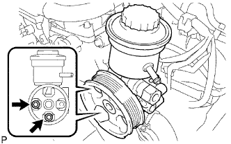
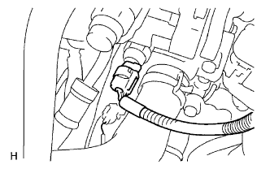
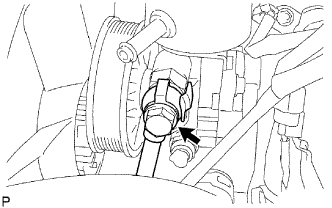
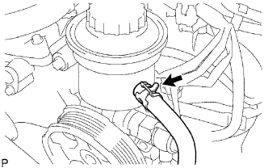

BƠM TRỢ LỰC > LẮP |
| 1. LẮP CỤM BƠM TRỢ LỰC LÁI |
|  |
Lắp bơm trợ lực lái bằng 2 bulông.
|  |
Lắp giắc vào công tắc ắp suất dầu.
Lắp công tắc áp suất dầu vào bơm cao áp.
| 2. LẮP CỤM ỐNG CẤP ÁP |
|  |
Lắp một gioăng mới và ống cấp áp vào bơm trợ lực bằng bu lông nối.
| 3. NỐI ĐƯỜNG ỐNG HỒI |
|  |
Lắp ống bằng kẹp.
| 4. LẮP ĐAI V CHO QUẠT VÀ MÁY PHÁT |
 |
Lắp dây đai dẫn động vào các puli trừ puli bộ căng đai.
Dùng một chi tiết có hình lục giác được chỉ ra bởi mũi tên trên hình minh hoạ để dịch chuyển puli bộ căng đai xuống và sau đó lắp đai dẫn động lên puli căng đai.
 |
Sau khi đã lắp một dây đai mới, hãy kiểm tra rằng dấu chỉ báo của bộ căng đai nằm trong vùng A như trong hình vẽ.
| 5. LẮP CÁP VÀO CỰC ÂM ẮC QUY |
| 6. TIẾN HÀNH THIẾT LẬP BAN ĐẦU |
Tiến hành thiết lập ban đầu (Xem trang Kích chuột vào đây).
| 7. ĐỔ DẦU TRỢ LỰC LÁI VÀO |
| 8. HÃY XẢ KHÍ RA KHỎI HỆ THỐNG TRỢ LỰC LÁI |
Kiểm tra mức dầu.
Kích phía trước của xe lên và đỡ xe bằng các giá đỡ.
Quay vô lăng.
Với động cơ tắt máy, quay chậm vô lăng từ vị trí khoá sang vị trí khoá vài lần.
Hạ xe xuống.
Khởi động động cơ. Để động cơ chạy ở tốc độ không tải trong vài phút.
Quay vô lăng.
Với động cơ chạy không tải, quay vô lăng sang trái hoặc sang phải đến vị trí khoá hoàn toàn và giữ tại đó khoảng 2 đến 3 giây. Sau đó quay vô lăng đến vị trí khoá hoà toàn phía đối diện và giữ tại đó từ 2 đến 3 giây.
Lặp lại bước trên một vài lần.
Tắt động cơ.
 |
Kiểm tra hiện tượng nổi bọt và đóng cặn, Nếu hệ thống đã được xả khí hai lần do có hiện tượng nổi bọt và đóng cặn, thì kiểm tra rò rỉ dầu trong hệ thống.
Kiểm tra mức dầu.
| 9. KIỂM TRA MỨC DẦU TRỢ LỰC TRONG BÌNH CHỨA |
| 10. KIỂM TRA RÒ RỈ DẦU |